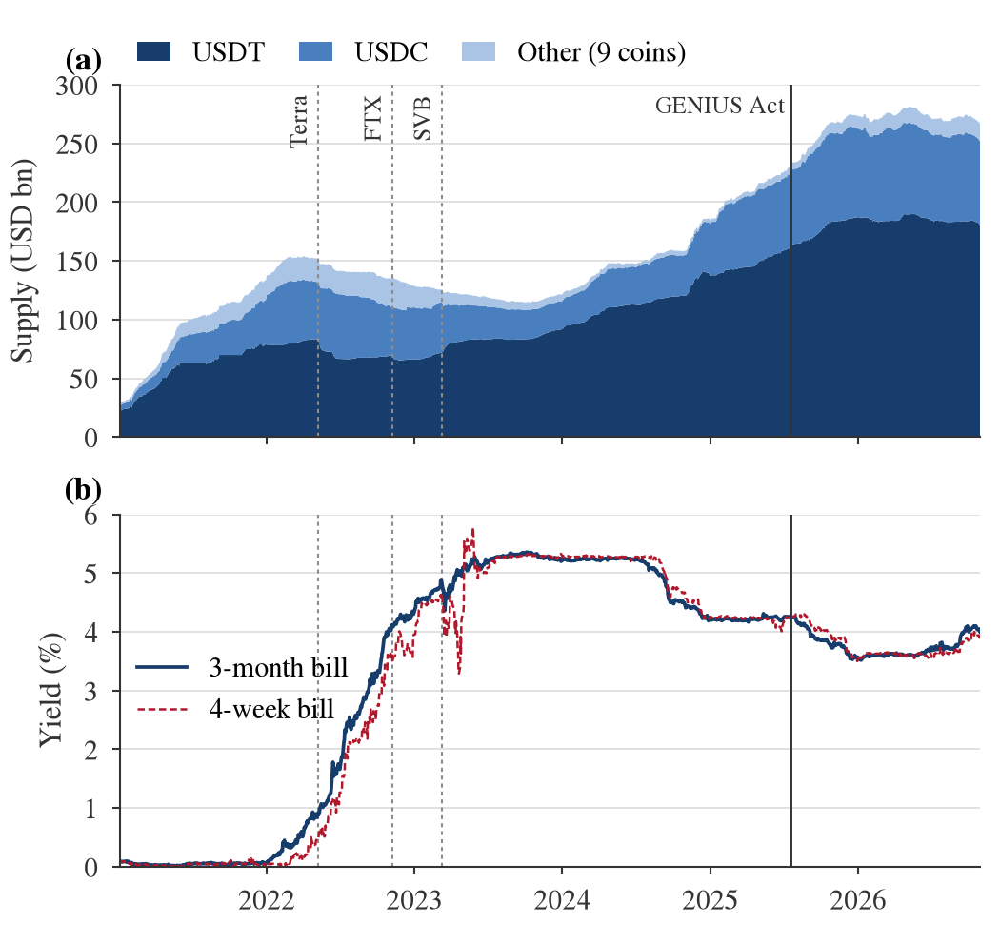
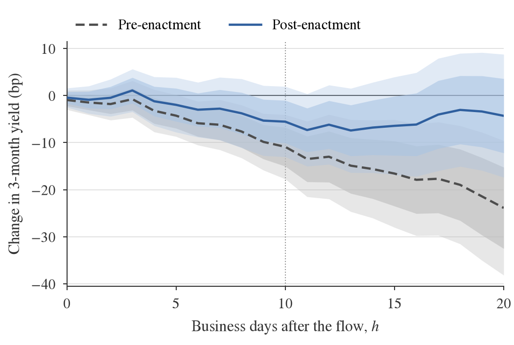
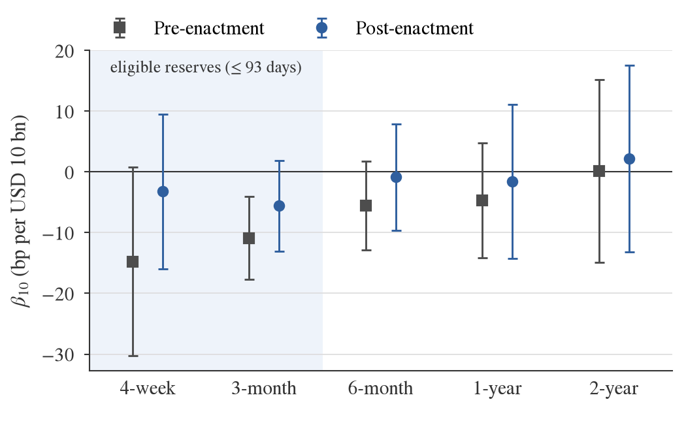
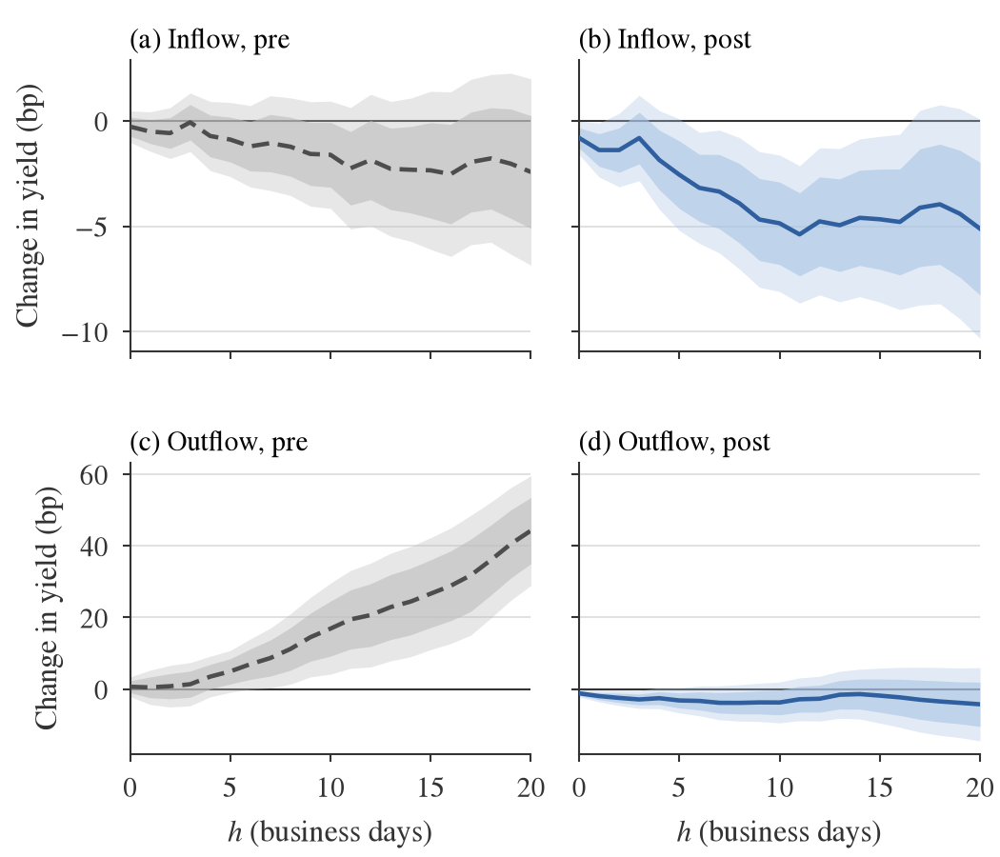
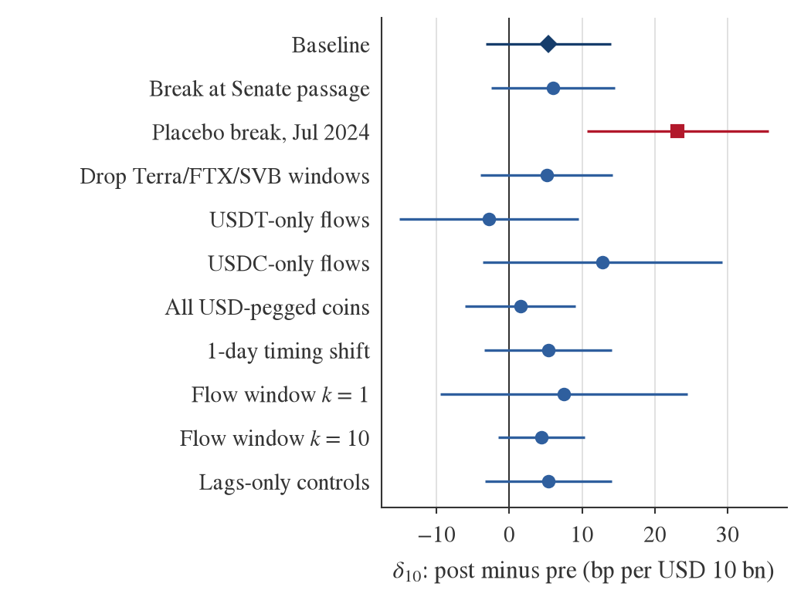

1 Introduction
Fiat-backed stablecoins hold most of their reserves in short-dated US government debt. With aggregate supply of the coins we study near USD 267 bn at the end of our sample, their issuers have become a visible class of buyer at the very front of the Treasury curve. The Bank for International Settlements (BIS) notes that their Treasury holdings are now “on par with large jurisdictions and government money market funds” and that a USD 3.5 bn increase in stablecoin market capitalisation “can already depress Treasury yields by around 2.5–5 basis points” [1]. That estimate comes from Ahmed and Aldasoro [2], who document the flow–yield association with local projections and identify it with an instrument.
On 18 July 2025 the United States enacted the GENIUS Act [3]. It turns the composition of stablecoin reserves from an issuer choice into a legal requirement, and among Treasury securities it admits only those maturing within 93 days. If stablecoin demand moves bill yields, codifying that demand could plausibly strengthen the channel, by making reserve purchases more mechanical, or concentrate it at the shortest maturities.
This paper asks whether the data so far show either. The question is narrow, and so is the design: a replication-in-spirit of the controls-only local projections of [2], extended with an interaction for the post-enactment regime and estimated on open data. To limit researcher degrees of freedom we committed a pre-analysis plan (PAP) with hypotheses, specification, robustness list and decision rules before downloading any yield data. A null result was declared publishable in advance.
Hypotheses
Writing for the response of the yield to an inflow (negative if inflows lower yields), the PAP states: H1: at horizon , for the 3-month bill; H2: after enactment the response is concentrated at the 4-week and 3-month tenors, and is flatter across tenors before; H3: outflows move yields more than inflows of the same size, in both regimes.
Findings
None of the three hypotheses is supported after enactment. The post-enactment response of the 3-month yield is about half the pre-enactment one, not larger, and the difference is imprecise. The short-end concentration of H2 is already present before enactment. The outflow asymmetry of H3 appears before enactment, where it is plausibly driven by rate-motivated redemptions during the 2022–23 tightening cycle, but not after. A pre-registered placebo break shows that the flow–yield association shifts between sub-periods even without any legislative event.
Contributions
(i) A legally dated regime break, rather than a market-size proxy, for the stablecoin–bill channel; (ii) a term-structure test motivated by the 93-day rule; (iii) a post-enactment sample extending seven months beyond that of [2]; and (iv) a fully reproducible, pre-registered pipeline in which every number in the text is generated from versioned results files.
2 Institutional Background and Related Work
The GENIUS Act
The Guiding and Establishing National Innovation for U.S. Stablecoins Act (S. 1582) passed the Senate on 17 June 2025 and the House on 17 July 2025, and was signed on 18 July 2025 as Public Law 119-27 [3]. Section 4(a)(1)(A) requires a permitted issuer to hold identifiable reserves at least one-for-one, comprising US currency and Federal Reserve balances; demand deposits at insured institutions; “Treasury bills, notes, or bonds (I) with a remaining maturity of 93 days or less; or (II) issued with a maturity of 93 days or less”; overnight repurchase and reverse repurchase agreements backed by Treasuries; government money market funds invested in these assets; other similarly liquid federal assets approved by the regulator; and tokenised forms of the above. The 93-day limit is therefore a ceiling on the maturity of eligible Treasuries, not a mandate to hold bills: an issuer can meet the rule entirely with deposits or repo.
Under §20 the Act takes effect on the earlier of 18 months after enactment (18 January 2027) or 120 days after final implementing regulations. The Office of the Comptroller of the Currency issued its final rule on 21 October 2026 with an effective date of 18 January 2027 [4]. Throughout our post-enactment sample the reserve requirements were therefore known but not yet binding. “Post” in this paper denotes an anticipation regime.
Stablecoins and safe-asset prices
Ahmed and Aldasoro [2] estimate the effect of stablecoin flows on Treasury yields with local projections [5]. The first version (May 2025) instruments flows with crypto-market shocks, reports that a two-standard-deviation inflow lowers 3-month yields by 2–2.5 bp within ten days, and finds outflows raise yields two to three times as much as inflows lower them. The BIS figures quoted above (2.5–5 bp per USD 3.5 bn, up to three times larger in redemption episodes) [1] predate the revision and draw on this version. The revised version (June 2026) uses a granular instrument across stablecoin–blockchain pairs, a sample from January 2021 to March 2026 and a larger set of controls. It reports bp on impact and about bp within ten days per USD 3.5 bn. Its controls-only local projection, the specification closest to ours, gives less than 1 bp within ten days and is not significant. The revision reports no asymmetry result and, in its footnote 25, does not use GENIUS passage as an event.
Why maturity matters
In preferred-habitat models of the term structure [6], demand from investors anchored to a maturity segment moves yields in that segment most, with arbitrage transmitting part of the effect to neighbouring maturities. A rule confining stablecoin Treasury demand to 93 days thus predicts the pattern tested by H2.
3 Data
Stablecoin supply
Daily circulating supply comes from the DefiLlama stablecoins API [7], with coin identifiers looked up by symbol. The primary aggregate sums 11 fiat-backed payment stablecoins (Table 6): USDT, USDC, FDUSD, PYUSD, TUSD, USDP, BUSD (defunct, history retained), RLUSD, and three coins added under a rule fixed in the PAP (fiat-backed and above USD 1 bn): USD1, USDG and USDGO. Tokenised money market funds (e.g. BUIDL) and crypto-collateralised or synthetic dollars (DAI/USDS, USDe) are excluded: the former are fund shares rather than payment stablecoins, and the latter are not backed by the cash-and-Treasury reserves that the Act regulates. Short gaps in a coin’s series (up to three days) are forward-filled; across longer gaps the coin is excluded from the aggregate. The total of all USD-pegged coins reported by DefiLlama serves as a robustness aggregate.
Timing
A DefiLlama snapshot dated is taken at 00:00 UTC and therefore measures supply at the end of US trading day ; we assign it accordingly. Assigning it to day is a pre-registered robustness check.
Yields and controls
From FRED [8] we take secondary-market Treasury-bill yields (4-week, 3-month, 6-month), constant-maturity 1- and 2-year yields, the effective federal funds rate, VIX, the S&P 500 index and the Federal Reserve’s overnight reverse repo (ON RRP) volume. Yields are converted to basis points. The bitcoin closing price comes from Binance. All files are cached with download timestamps (vintage 31 October 2026) and never edited by hand.
Sample
The calendar is the set of US business days on which the 3-month bill yield is published. The estimation sample runs from 4 January 2021 to 29 October 2026: 1,135 business days before enactment and 322 after (312 at ). After alignment no regression variable has missing values. Fig. 1 shows the series and Table 1 the summary statistics.

The two regimes differ in ways that matter for interpretation. After enactment the average five-day inflow is smaller (USD 0.59 bn against 0.90 bn) while its standard deviation is similar (1.91 against 1.77). Supply is about twice as large on average (USD 268 bn against 135 bn). Daily changes in the 3-month yield are less volatile (standard deviation 2.07 bp against 3.73 bp). ON RRP balances, a cushion of short-term liquidity before enactment (mean USD 1087 bn), average only USD 14 bn afterwards.
| Pre () | Post () | |
|---|---|---|
| 5-day flow (USD bn) | 0.90 (1.77) | 0.59 (1.91) |
| Supply (USD bn) | 135.47 (39.38) | 267.70 (11.98) |
| 3-month bill yield (bp) | 316.80 (214.73) | 377.02 (19.58) |
| Daily 3-month yield (bp) | 0.37 (3.73) | 0.07 (2.07) |
| 2-year CMT yield (bp) | 316.13 (174.94) | 388.96 (40.64) |
| VIX | 19.58 (5.43) | 17.69 (3.12) |
| ON RRP (USD bn) | 1087.20 (819.77) | 14.09 (34.77) |
4 Method
Specification
For horizons business days we estimate the local projection [5] where is the 3-month bill yield in basis points, is the five-business-day change in aggregate supply in USD bn, and from 18 July 2025. The pre-enactment response is , the post-enactment response , and the test of a change is . The primary horizon is . Coefficients are reported per USD 10 bn of five-day flow. For comparison with [2] we also report them per USD 3.5 bn (about two standard deviations of ) and per one standard deviation (USD 1.81 bn).
Controls
contains lags 1–5 of and of the daily flow , and same-day changes in the 2-year yield (a proxy for policy expectations, omitted when the 2-year yield is the outcome), VIX, bitcoin and S&P 500 log returns and . Same-day controls could themselves respond to flows, but they also absorb common risk and policy news. We therefore also report a lags-only version.
Inference
Standard errors are Newey–West [9] with a Bartlett kernel and lags, which accounts for the overlap of the dependent variable across days. Lag-augmented local projections, as here, are known to give valid inference over a wide range of persistence [10]; we nevertheless use the pre-registered autocorrelation-robust errors. Bands in the figures are 68% and 90%. We make no correction for multiple testing across 5 tenors and 21 horizons; inference focuses on the pre-registered and on the shape of the whole response.
Secondary specifications
(i) Term structure: Eq. (1) with the 4-week, 6-month, 1-year and 2-year yields as outcomes. (ii) Asymmetry: is replaced by and , each interacted with . The response to a USD 3.5 bn outflow is , so a positive number means outflows raise yields, and a Wald test compares with within each regime. (iii) Spread: the 3-month bill yield minus the effective federal funds rate, to separate bill-specific pricing from policy-rate expectations.
Pre-registration
The PAP (docs/PAP.md) was committed to the repository before any yield data were downloaded or any regression was run. It fixes the hypotheses, the universe rule, timing, Eq. (1), the primary horizon, the secondary specifications, a closed list of ten robustness checks and the decision rules. Among the rules: null or opposite-signed results are reported as the headline; no instrumental-variable strategy is attempted; and the primary specification is never changed. One amendment to the plan, made before any regression, and one later correction to a descriptive table are listed in Appendix C. No analysis in this paper is post hoc.
Use of generative AI
The study was carried out with Claude (Anthropic), operated through the Claude Code agent. Working from the author’s written brief, which specified the research question, hypotheses, design, data sources, decision rules and quality bar, the agent wrote the pre-analysis plan and the code, downloaded and processed the data, ran the estimations, produced the figures and tables, and drafted this manuscript. The author directed the work, reviewed its outputs and takes sole responsibility for the content. Every number in the text is generated by code from versioned results files rather than typed, which limits one class of transcription error but not errors of design or interpretation.
5 Results
5.1 Primary specification (H1)
Before enactment, a USD 10 bn five-day inflow is associated with a 3-month yield 10.9 bp lower after ten business days (s.e. 4.2; 90% CI 17.7 to 4.1). After enactment the estimate is 5.6 bp (s.e. 4.5; 90% CI 13.0 to +1.9; ). The difference is bp (s.e. 5.2, ). It is not statistically distinguishable from zero, and its sign is opposite to H1, which predicts (Table 2). At the scale of [2] the estimates are 3.8 bp before and 1.9 bp after enactment per USD 3.5 bn; per standard deviation of they are 2.0 and 1.0 bp. Dropping the same-day controls changes nothing material ( bp, ). H1 is not supported.
Fig. 2 shows the full responses. Before enactment the response builds steadily, reaching 23.9 bp at . After enactment it bottoms out at 7.4 bp at and then fades towards zero. The gap widens with the horizon ( bp, ). No single horizon is significant at the 5% level, and adjacent horizons are highly correlated by construction.

| Pre-enactment | Post-enactment | Difference | ||||||
| Horizon, scaling | est. (s.e.) | est. (s.e.) | est. (s.e.) | |||||
| , per USD 10 bn | 0.95 (1.25) | 0.45 | 0.45 (1.24) | 0.71 | +0.50 (0.80) | 0.53 | 1135 | 322 |
| , per USD 10 bn | 4.28 (2.70) | 0.11 | 1.98 (3.53) | 0.57 | +2.29 (3.00) | 0.45 | 1135 | 317 |
| , per USD 10 bn | 10.90 (4.16) | 0.01 | 5.56 (4.54) | 0.22 | +5.35 (5.21) | 0.30 | 1135 | 312 |
| , per USD 10 bn | 23.88 (8.69) | 0.01 | 4.31 (7.95) | 0.59 | +19.57 (11.02) | 0.08 | 1135 | 302 |
| , per 1 s.d. (USD 1.81 bn) | 1.97 (0.75) | 0.01 | 1.01 (0.82) | 0.22 | +0.97 (0.94) | 0.30 | 1135 | 312 |
| , per USD 3.5 bn | 3.82 (1.45) | 0.01 | 1.94 (1.59) | 0.22 | +1.87 (1.82) | 0.30 | 1135 | 312 |
Dependent variable: in bp. Coefficients scaled to the stated flow size; Newey–West standard errors ( lags) in parentheses; two-sided -values. falls with because leads run to the end of the sample.
5.2 Term structure (H2)
Before enactment the ten-day response shrinks with maturity: 14.8 bp at 4 weeks, 10.9 at 3 months, 5.6 at 6 months, 4.7 at 1 year and 0.1 at 2 years (Fig. 3, Table 3). Only the 3-month estimate is significant at 5% (; 4-week ). The gradient is consistent with preferred-habitat demand [6], but it was already present before the Act. After enactment every tenor is smaller in absolute value and imprecise, and no tenor’s is significant (all ). H2 is not supported.

| Tenor | Pre | Post | ||
|---|---|---|---|---|
| 4-week bill | 14.78 (9.44) | 3.22 (7.75) | +11.55 (10.18) | 0.26 |
| 3-month bill | 10.90 (4.16) | 5.56 (4.54) | +5.35 (5.21) | 0.30 |
| 6-month bill | 5.56 (4.43) | 0.84 (5.33) | +4.73 (5.87) | 0.42 |
| 1-year CMT | 4.65 (5.74) | 1.60 (7.71) | +3.05 (8.62) | 0.72 |
| 2-year CMT | 0.14 (9.14) | 2.22 (9.35) | +2.08 (10.72) | 0.85 |
5.3 Asymmetry (H3)
Before enactment, outflows are associated with much larger yield moves than inflows (Fig. 4, Table 4). Per USD 3.5 bn at , an inflow is associated with 1.6 bp () and an outflow with +16.9 bp (); equal slopes are rejected at . This matches the direction of the first version of [2]. The magnitude, however, is implausible: +44.3 bp at . Of the 412 pre-enactment outflow days, 321 fall in 2022–23, when the Federal Reserve was raising rates. Stablecoins pay no interest, so rising rates plausibly caused both the redemptions and the rise in yields. We read this asymmetry as rate-driven redemption, not fire-sale price impact.
After enactment an inflow is associated with 4.9 bp () and an outflow with 3.7 bp (): outflows are associated with lower, not higher, yields. The equal-slope test rejects () because the signs differ, not because outflows dominate. H3 is not supported after enactment.

| Regime | Inflow () | Outflow () | ||
|---|---|---|---|---|
| Pre | 5 | 0.9 (0.41) | +5.0 (0.16) | 0.30 |
| 10 | 1.6 (0.30) | +16.9 (0.03) | 0.07 | |
| 20 | 2.4 (0.37) | +44.3 (0.01) | 0.01 | |
| Post | 5 | 2.6 (0.11) | 3.2 (0.13) | 0.05 |
| 10 | 4.9 (0.01) | 3.7 (0.28) | 0.05 | |
| 20 | 5.1 (0.11) | 4.2 (0.50) | 0.22 |
Inflow ; outflow . Last column: Wald test of within the regime.
5.4 Bill–policy-rate spread
For the 3-month bill yield minus the effective federal funds rate, bp (). Neither regime is significant (pre 4.1 bp, ; post 2.1 bp, ). The association with the bill yield is therefore not visible in the spread. This is consistent with the bill-yield association reflecting policy-rate expectations rather than a bill-specific scarcity premium, which would also explain why the controls-only estimate is larger than the instrumented one (Section 7).
6 Robustness, Placebo and Power
Pre-registered checks
Table 5 and Fig. 5 report the closed list of ten robustness checks next to the baseline: a break at Senate passage; a placebo break; dropping 10 business days around the Terra, FTX and SVB episodes; USDT-only and USDC-only flows; the all-USD-pegged aggregate; the one-day timing shift; flow windows of one and ten days; and lags-only controls. Across the 10 non-placebo rows is never significant (smallest ) and is positive in 9 of them. The exception is USDT-only flows, where the post-enactment response is larger (13.5 against 10.7 bp; , ). The post-enactment response is individually significant only with the all-USD-pegged aggregate (9.2 bp, ) and the ten-day window (8.0 bp, ).
Placebo
A break on 18 July 2024, estimated on data ending before Senate passage, gives bp (), with a “post” response of 9.6 bp. The flow–yield association thus shifts by more than the GENIUS-Act difference between two sub-periods separated by no legislative event. Even a significant at enactment could not have been attributed to the Act on this evidence, and the instability is itself a finding: the controls-only association is not a stable structural parameter.
Power
With 312 post-enactment observations at , the standard error of is 5.2 bp. The minimum detectable difference at 80% power and a two-sided 5% test is therefore about bp per USD 10 bn, roughly 1.3 times the entire pre-enactment estimate. A doubling of the response would have been hard to detect. The null is weak evidence of no change.

| Specification (, per USD 10 bn) | Pre | Post | / | ||
|---|---|---|---|---|---|
| Baseline (primary spec) | 10.90 (4.16) | 5.56 (4.54) | +5.35 (5.21) | 0.30 | 1135 / 312 |
| Alternative break 2025-06-17 (Senate) | 10.89 (4.19) | 4.86 (4.50) | +6.03 (5.18) | 0.24 | 1114 / 333 |
| Placebo break 2024-07-18 (data to 2025-06-16) | 13.46 (4.76) | 9.64 (6.60) | +23.10 (7.58) | 0.01 | 886 / 218 |
| Drop 10 business days around Terra, FTX, SVB | 10.67 (4.51) | 5.55 (4.57) | +5.12 (5.50) | 0.35 | 1072 / 312 |
| USDT-only flows | 10.67 (4.87) | 13.45 (7.08) | 2.79 (7.46) | 0.71 | 1135 / 312 |
| USDC-only flows | 16.58 (9.55) | 3.75 (8.52) | +12.83 (9.98) | 0.20 | 1135 / 312 |
| All USD-pegged aggregate | 10.74 (2.62) | 9.23 (4.42) | +1.51 (4.60) | 0.74 | 1135 / 312 |
| 1-day timing shift | 11.06 (4.41) | 5.72 (4.31) | +5.34 (5.30) | 0.31 | 1135 / 312 |
| Flow window k = 1 | 11.54 (4.84) | 4.02 (7.98) | +7.51 (10.33) | 0.47 | 1135 / 312 |
| Flow window k = 10 | 12.42 (3.98) | 8.01 (2.69) | +4.42 (3.63) | 0.22 | 1135 / 312 |
| Lags-only controls | 11.01 (4.41) | 5.65 (4.54) | +5.35 (5.28) | 0.31 | 1135 / 312 |
“Pre” and “post” are relative to each row’s break date; in the placebo row “post” is 18 July 2024 to 16 June 2025 and the GENIUS period is outside the sample. USDT- and USDC-only rows use that coin’s own flows; the rows change the flow window, so “per USD 10 bn” refers to a -day flow.
7 Relation to Ahmed and Aldasoro (2025)
What is replicated
We follow [2] in the flow definition (the five-day change in supply on trading days), the outcome (the 3-month bill), the estimator (local projections) and the inference (Newey–West). Our five-day flow moments (mean USD 0.83 bn, standard deviation 1.81) are close to theirs (0.88 and 1.74), although they use CoinMarketCap market capitalisation for seven coins and we use DefiLlama supply for 11.
What differs
We use a much smaller set of controls and no instrument. Our pre-enactment estimate per USD 3.5 bn (3.8 bp) resembles their instrumented estimate in the June 2026 revision (about bp within ten days). It is several times larger than their controls-only estimate, which is below 1 bp and insignificant. Their controls include lead changes in the policy rate and in 6-month and 1-year yields, bill auction sizes and monetary-policy surprises, which absorb policy-path news that ours do not. Our therefore probably still contains confounding through expected policy rates. The insignificant spread result in Section 5 points the same way. Our estimates should be read as conditional associations, and any resemblance to the instrumented magnitude as coincidence rather than corroboration.
What is added
The revision interacts flows with a post-2024 dummy and finds a stronger channel after 2024. Our pre-registered placebo at July 2024 points the other way in the controls-only design. Beyond that we add a legally dated break, a term-structure test motivated by the 93-day rule and seven additional months of post-enactment data.
8 Limitations
Endogeneity
Stablecoin flows respond to interest rates. The coins pay no yield, and the BIS documents larger redemptions after monetary tightening [1]. Flows also respond to risk appetite in crypto markets. Without an instrument, our coefficients are associations conditional on the controls, not causal effects. In particular, we cannot rule out that the pre-enactment association reflects rates moving supply rather than supply moving rates.
Short post sample and low power
With 312 post-enactment observations at , the minimum detectable change is about 15 bp per USD 10 bn (Section 6).
The Act is not yet binding
The reserve requirements take effect on 18 January 2027. Our post-enactment regime measures anticipation, and it coincides with Federal Reserve easing and the run-down of ON RRP balances. A regime dummy cannot separate these.
Measurement
Circulating supply is not reserve purchases. Issuers differ in how much of their reserves they hold in bills rather than in repo, deposits or money market funds, and this mix changes over time. DefiLlama data are also revised retroactively, so a later vintage may differ slightly.
Inference
Overlapping horizons make points on each response highly correlated. We make no correction for testing 5 tenors 21 horizons 2 regimes. Local projections in samples of a few hundred observations can be biased at long horizons, which argues for caution at .
9 Conclusion
In the fifteen months after the GENIUS Act became law, stablecoin inflows have not been associated with a larger fall in 3-month Treasury-bill yields than before. The point estimate is about half the pre-enactment one (5.6 against 10.9 bp per USD 10 bn at ten days), and the difference is imprecise (). The concentration of the association at the shortest maturities predates the Act. The outflow asymmetry seen before enactment is absent after it and is plausibly an artefact of the 2022–23 tightening cycle. A significant placebo break shows that the controls-only association is unstable, so even a significant change could not have been credited to the law.
None of this establishes that the Act has no effect on bill pricing. The rules are not yet binding, the post-enactment sample is short and the design is underpowered. Re-estimating the same pre-registered specification once the reserve rules have bound for a year, and with an instrument such as that of [2], would be the natural next step. The pipeline is built so that this requires only make refresh.
Appendix A: Reproducibility
The repository (https://github.com/thanatchon36/stablecoin-tbills-genius-act) contains the raw data as downloaded (except two copyrighted series; see below), the code, the pre-analysis plan, a timestamped research log (docs/FINDINGS.md) and this paper.
make allrebuilds the panel from the cached raw files, runs the data-sanity tests, estimates every pre-registered specification, writes the figures and tables, and regeneratespaper/numbers.tex,paper/tables/andpaper/figures/. It runs in under a minute, and every output is byte-identical across runs. The S&P 500 and VIX series are copyrighted and not redistributed, so on first run they are downloaded from FRED; every other raw file is in the repository.make paperbuilds this PDF with a pinned Tectonic release (downloaded with a SHA-256 check if absent).make refreshdownloads a new vintage of every source and rebuilds.
Every number in the prose is a macro generated by src/viz/paper_tex.py from output/tables/lp_results.json. Literature values and legal dates are typed and cited.
Appendix B: Stablecoin Universe
| Coin | DefiLlama id | First snapshot | Supply 29 Oct 2026 (USD bn) |
|---|---|---|---|
| USDT | 1 | 2017-11-29 | 180.48 |
| USDC | 2 | 2018-09-11 | 71.48 |
| FDUSD | 119 | 2023-05-27 | 0.30 |
| PYUSD | 120 | 2023-08-08 | 3.04 |
| TUSD | 7 | 2019-01-05 | 0.48 |
| USDP | 11 | 2018-09-11 | 0.02 |
| BUSD | 4 | 2020-04-17 | 0.03 |
| RLUSD | 250 | 2024-08-23 | 2.61 |
| USD1 | 262 | 2025-04-28 | 3.89 |
| USDG | 286 | 2025-07-12 | 3.07 |
| USDGO | 347 | 2026-02-17 | 1.29 |
Appendix C: Deviations from the Pre-Analysis Plan
Gap rule (amended before any regression): the PAP first set the aggregate to missing on days when a constituent coin had a gap longer than three days. This was changed to excluding that coin from the aggregate on those days, as the original brief specified. The only affected long gap (RLUSD, August–September 2024) predates its launch, when its supply was approximately zero.
Summary statistics (descriptive only): the first version computed five-day flows after truncating the sample, which dropped five observations. Flows are now computed before truncation, so the descriptive sample matches the regression sample. No estimate changed.
Fallback sources: CoinGecko and Treasury.gov fallbacks were configured but not needed, because no primary source failed.